Meudon 2006
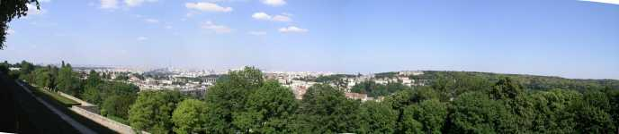
Une grande première à Meudon ! Jamais une rencontre importante n'avait eu lieu quasiment dans Paris. D'ailleurs du haut de la Terrasse de l'Observatoire, la vue sur la capitale est splendide. Tout le site est d'ailleurs extraordinaire et miraculeusement protégé : les observatoires nécessitent des forêts qui créent une atmosphère stable.

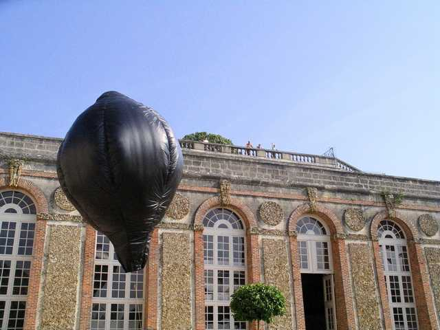
Avant de faire le tour du terrain, un saut vers l'Orangerie, en contrebas. Architecture solide (elle supporte la terrasse et ses arbres...). Devant, on profite du manque de vent et de l'abri pour faire voler des ballons solaires.

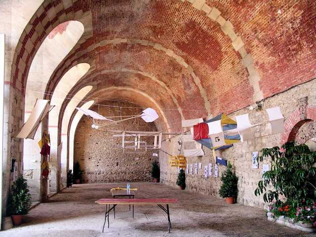
Dedans, exposition entre autres de cerfs-volants anciens.

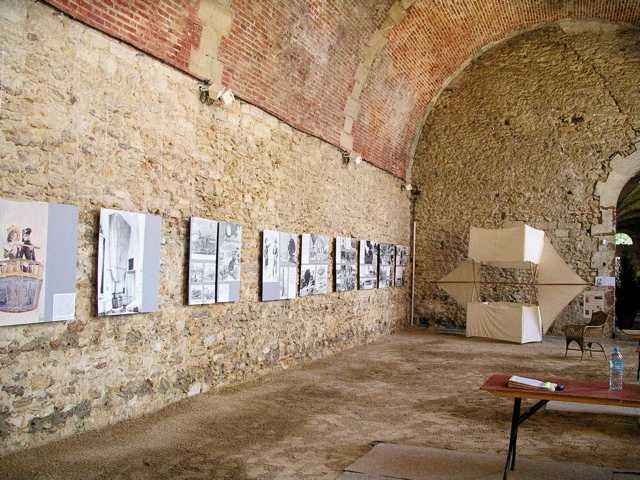
Carnet de vol a placardé une partie de son exposition consacrée aux débuts du cerf-volant, de l'aviation, des ballons...

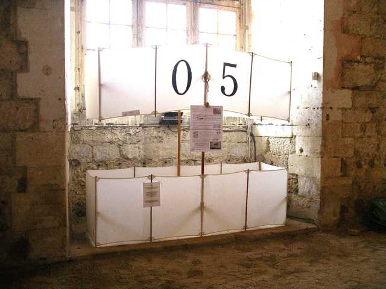
Et beaucoup de reconstitutions de cerf-volant classiques, bois-coton, comme ce 05 et sa cellule avant en flèche très rare...

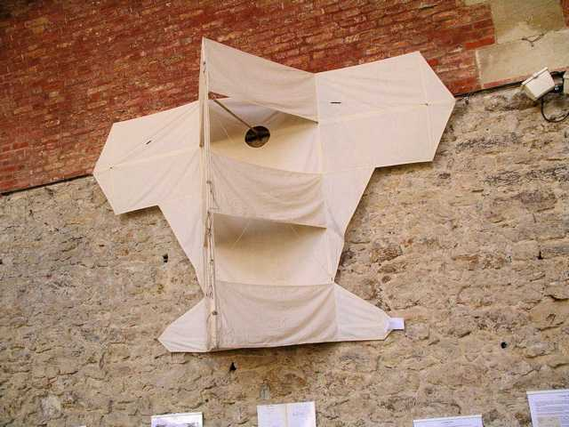
Au mur un énorme CV du genre Conyne mais avec des ailes du style Cody ou Saconney (je ne veux vexer personne...).

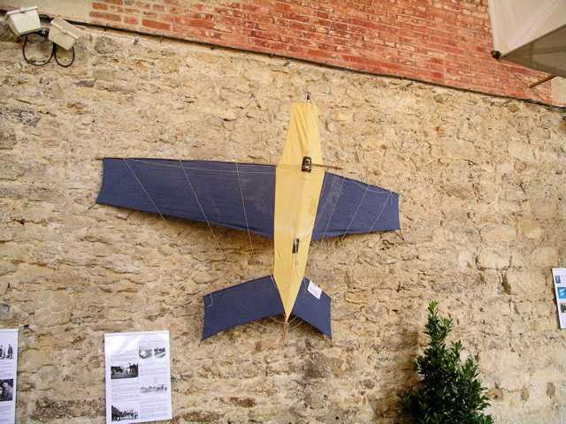
Un CV avion aussi, ancien, mais qui préfigure bien ceux de Joël ou de Jean-Marc sur un "design"... de Georges Peters, je crois !

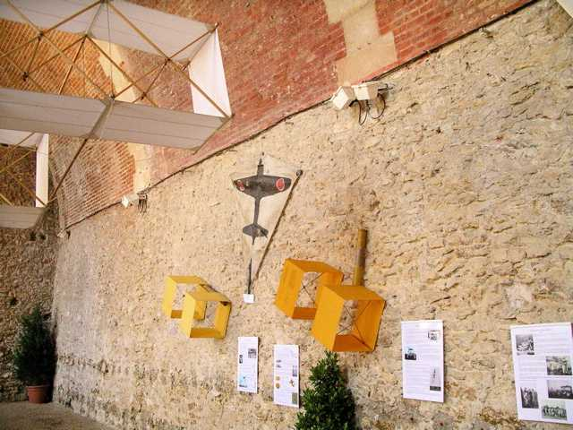
On n'a pas oublié les applications militaires, pour l'entraînement à la DCA ou, comme porte-antennes, pour les Gibson girls !

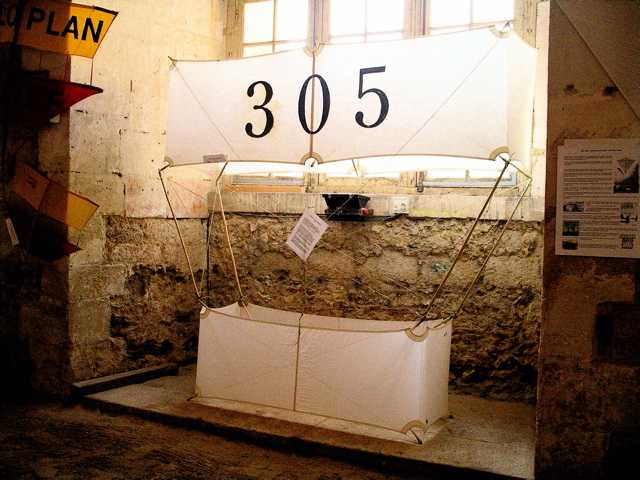
Encore un grand cellulaire, le 305. Particularité : aucune baguette ne touche la toile, tendue sur des ficelles. Mais au centre, d'énormes raccords métalliques avec une molette de réglage à vis pour mettre le tout en tension...

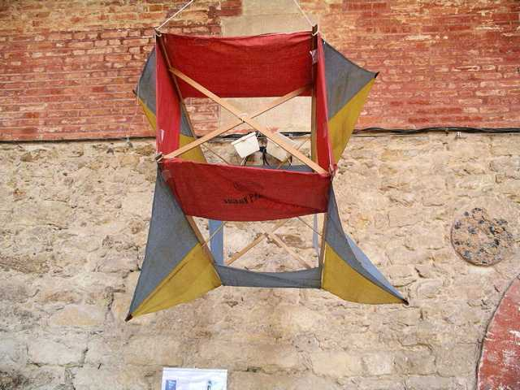
Celui-ci, l'Aiglon Parisien est plutôt un jouet... On n'ose pas le toucher de peur de le voir tomber en poussière !

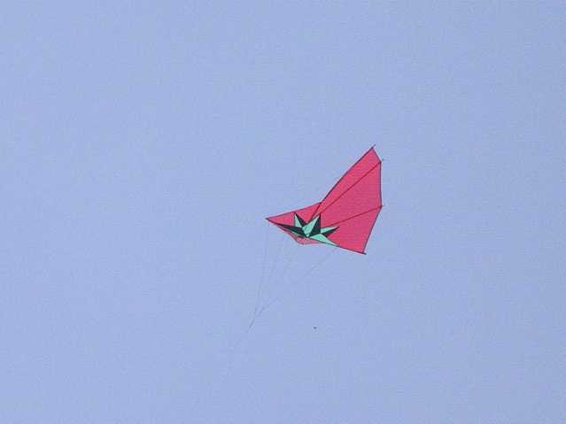
Côté cerfs-volants, la prestation est mince avec les arbres et le vent limité et turbulent... Un Jessica 14 défend notre honneur...

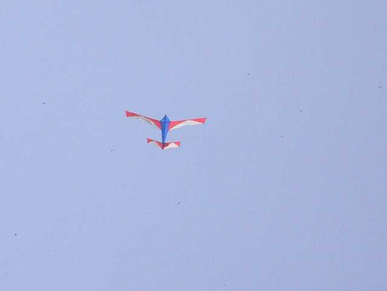
Jean-Marc fait voler aussi son avion...

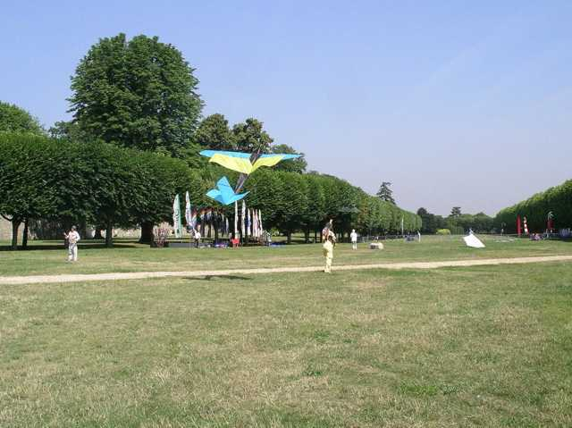
Et un allemand qui a fait le voyage a son avion à lui, avec une surface d'aile augmentée et une solide dérive verticale ! Ici, on est sur une demi-terrasse, la symétrique à droite surplombe Paris.

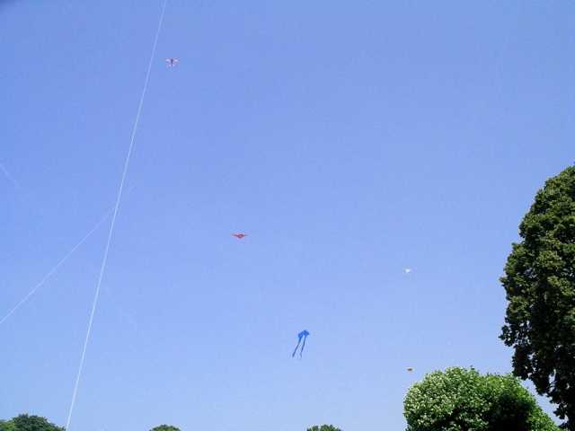
On arrive quand même à mettre un certain nombre de CVs en l'air malgré les conditions et le terrain difficile !

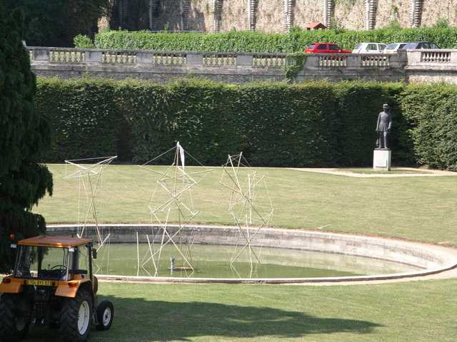
Le parc est magnifique. Tous les bassins sont décorés de sculptures paradoxales dont aucune barre n'en touche une autre, et pourtant, elles se développent en hauteur !

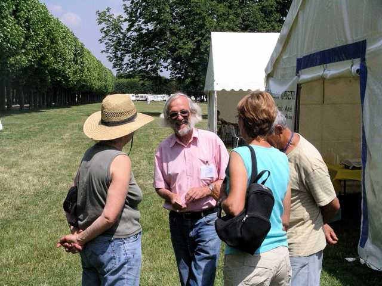
Il y a même des revenants : les Simonnet sont venus faire une visite et voleront tant bien que mal, avec toujours des cerfs-volants sortant de l'ordinaire !

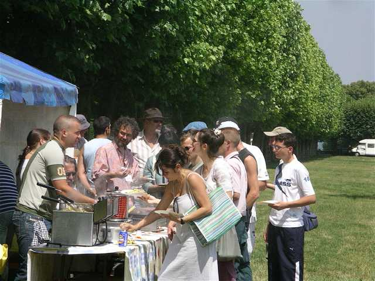
A midi, déjeuner, cuisiné par une association au profit des greffes de moelle. Malgré le nom, ça n'est pas tout à fait le festin de Babeth ! Mais on a droit à UN verre (d'eau) chacun ! Après tout, il y a une pompe à 300 m !

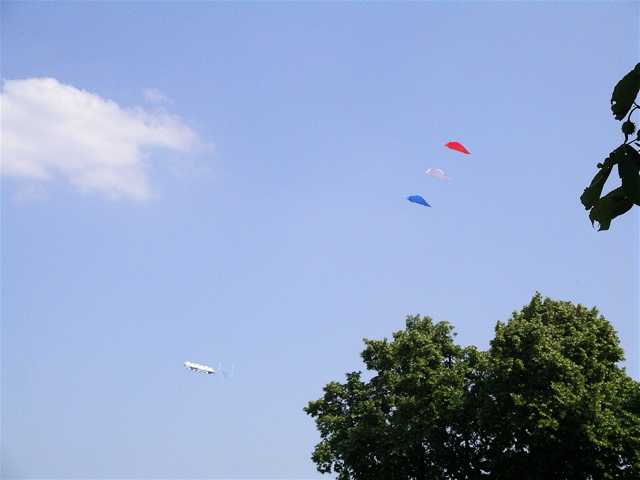
L'après-midi, vent toujours limite, il faut monter un peu pour trouver un souffle, mais même là-haut, ça retombe souvent...

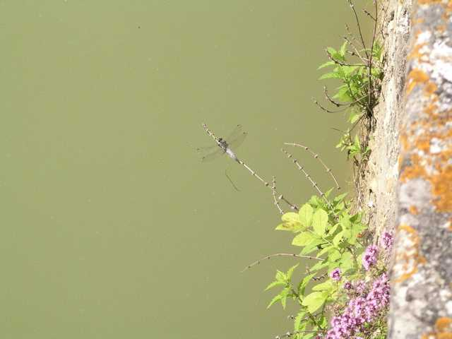
Bon, si c'est comme ça, on va visiter l'Observatoire. C'est un château transformé pour la chose, et le parc a de beaux restes, dont un grand étang très poissonneux paraît-il...

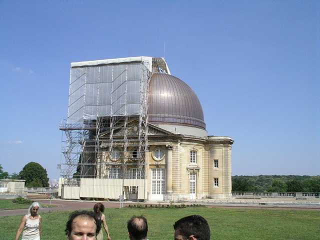
L'observatoire est en travaux. Comme la coupole tourne, on n'a fait qu'un demi-échafaudage ! Le château à l'origine avait des ailes et une tour, mais on a "arrangé" ça au mieux, ça a l'air construit pour...

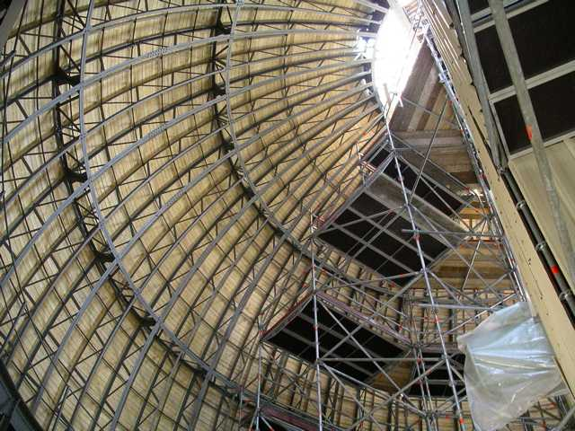
Sous la coupole, la grande lunette (à droite) est malheureusement emballée pour la protéger des projections, des pigeons et des fuites d'eau ! On peut quand même admirer l'architecture métallique due à un maître d'Eiffel...

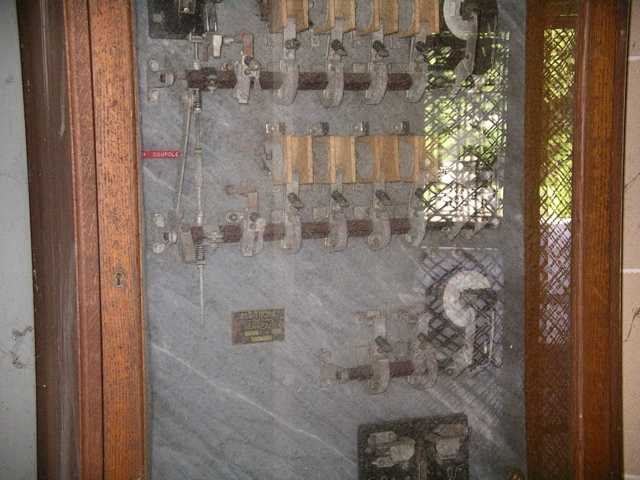
L'atmosphère parisienne étant évidemment très polluée, l'Observatoire ne sert plus qu'aux étudiants et aux Assocs. Il a une informatique de pointe avec fibres optiques, etc... mais le budget est nul sur d'autres domaines !

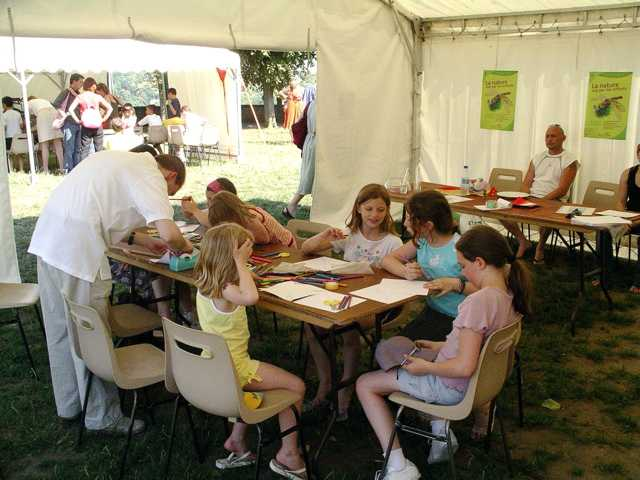
Revenons sur Terre : les enfants ne sont pas oubliés, avec des ateliers gratuits : un pour les moulinets...

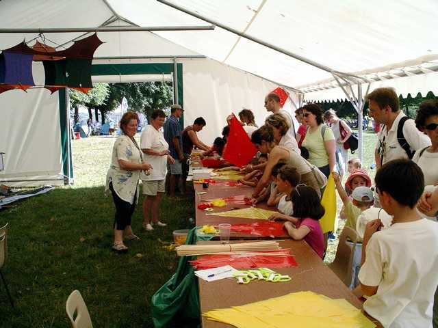
...et un pour les cerfs-volants, Eddies ou Coccinelles, tenu par le Cerf-Volant Club Celtique et où ça se bouscule...

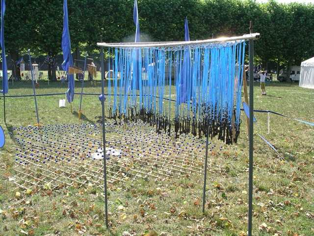
Il y a aussi bien sûr des JdVs, celui des Guilbert avec les clés anciennes et les bleuets...

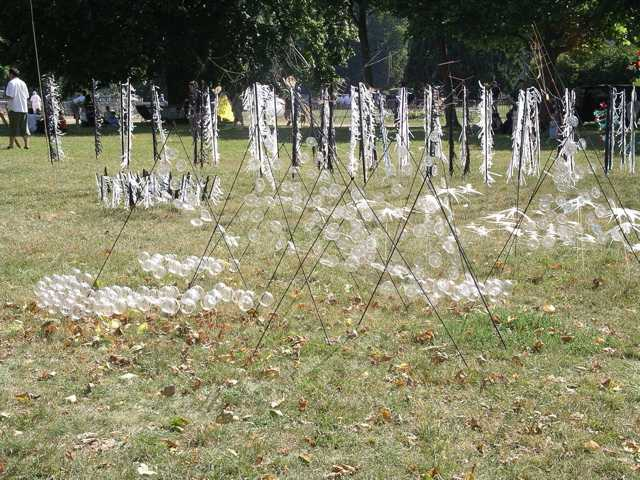
Celui de Thérèse qui joue sur les transparences et les multiples !

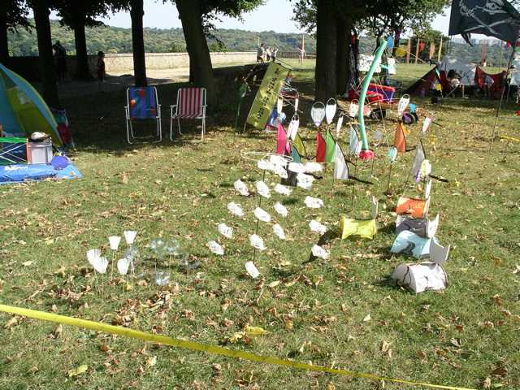
Et celui-ci, avec les timbales découpées et les chats ? Celui des Duba, bien sûr !

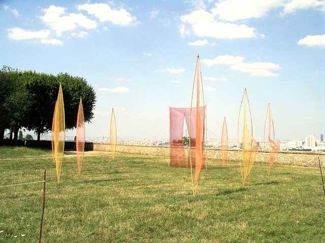
Didier améliore chaque jour ses arcs translucides... Ils sont bien placés, ici, devant le paysage parisien.

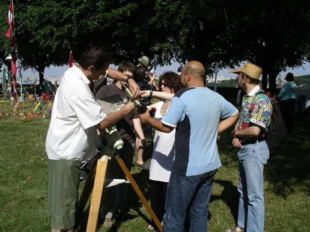
Nous aurons aussi des démonstrations de télescope dont celui-ci pour voir le soleil...

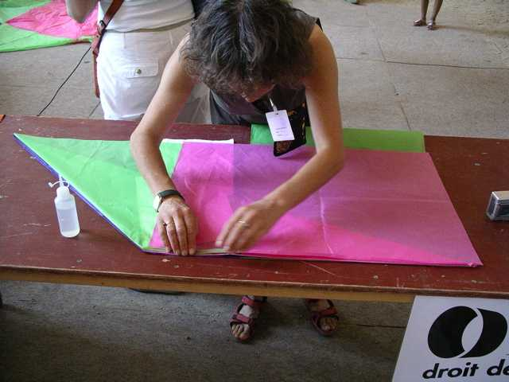
Dans l'Orangerie, un atelier encore, mais pour les grands, et soigneux : construction de montgolfières en papier ! Cet atelier est soutenu par la projection en boucle du film plein d'émotion sur les gigantesques (40 m !) montgolfières en papier du Brésil.

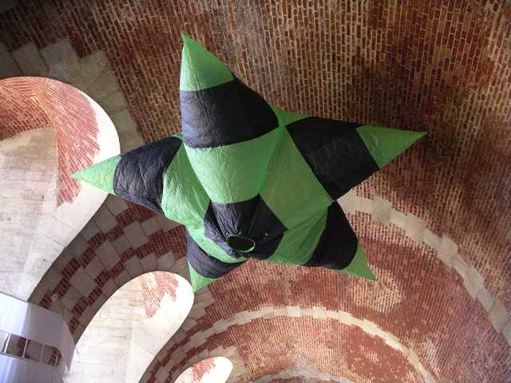
Profitant de la hauteur de plafond, on en fait voler aussi, en gonflant et chauffant au sèche-cheveux d'abord, puis au pistolet thermique... Avantage, on peut recommencer indéfiniment ou presque !

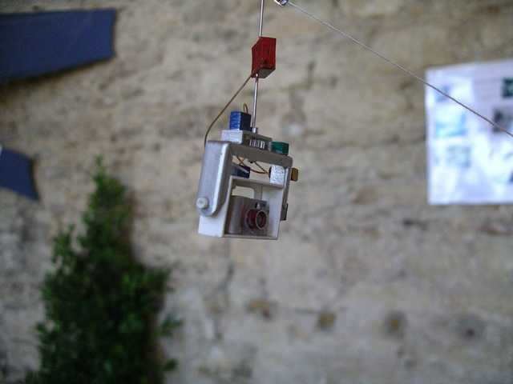
Dans les objets exposés, cette nacelle photo n'en est pas vraiment une : elle a 2 cm de côté, et fait partie d'une maquette de Bruno pour illustrer l'aérophoto !

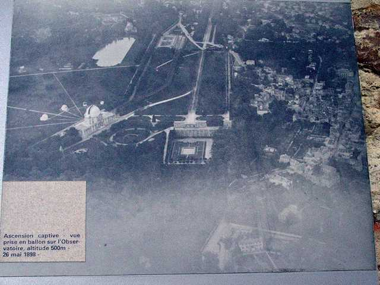
Dans l'expo photo, on retrouve la vue du site il y a 108 ans, l'Observatoire à gauche, au milieu les terrasses et plus près, l'Orangerie avec devant, les pelouses et le bassin carré... Vous pouvez aller sur Google Earth pour comparer !

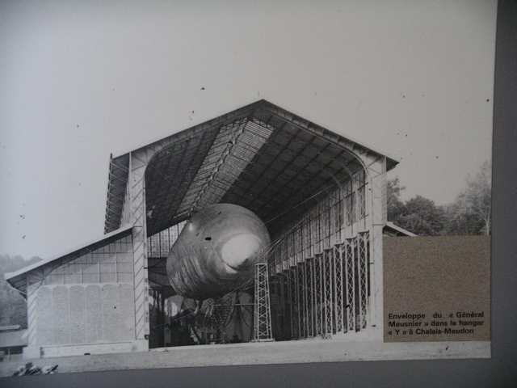
On pouvait aussi visiter le hangar Y, haut lieu du ballon dirigeable, où on en a fabriqué plusieurs et qui a abrité la collection ou plutôt l'entassement de moteurs d'avions anciens du Musée de l'Air... Une Assoc voudrait réhabiliter ce hangar à dirigeable...

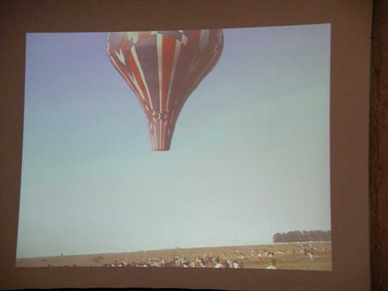
Le film sur les montgolfières : celle-ci, énorme, lève en outre une grande toile de 40 m de large et 30 m de haut (en papier, bien sûr !) sous une poutre en treillis de bambou !

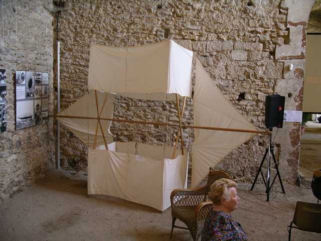
Une reconstitution du Madiot, cerf-volant emblème du CVCF, en bois et coton, avec des viroles en laiton pour les armatures en bois coniques.

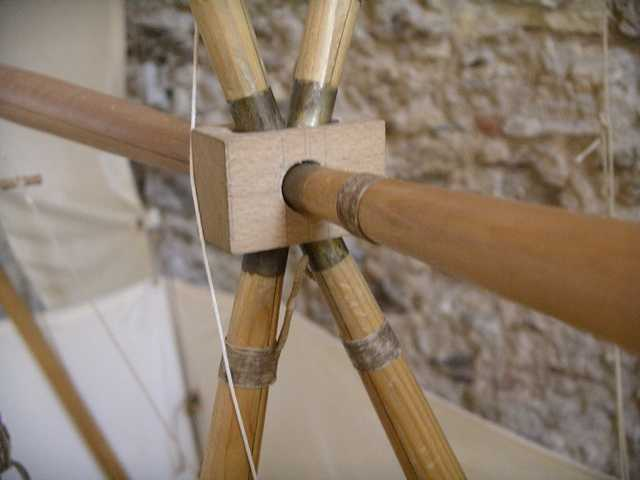
Elles s'assemblent sur cette pièce qui ne me paraît pas du même style, ni très sûre !

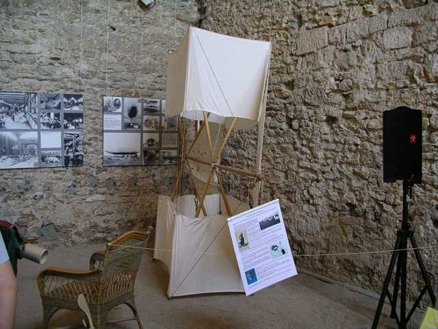
On remarque bien la caractéristique du Madiot dont le longeron d'aile passe par le centre du total, ce qui réduit le nombre de barres.

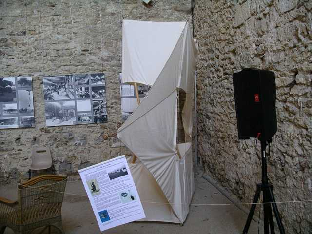
Evidemment, cela donne un dièdre négatif, peut-être pas fameux pour la stabilité (les cellules rattrapent ça ?) mais qui doit augmenter la portance... Il paraît qu'il était bien meilleur que le Saconney (ouh, le courrier que je vais recevoir !).

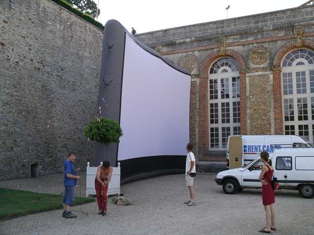
Devant l'Orangerie, on monte l'écran géant (gonflable, on pourrait en faire un cerf-volant ?) pour le film, après le vol de nuit. Celui-ci aura lieu... de jour, on ne va pas le commencer à minuit ! Le vol de nuit, je vais bien l'animer, mais chut...

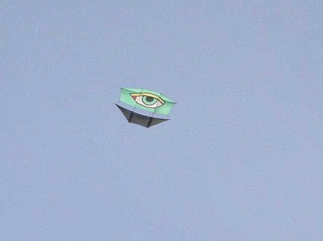
Les allemands ont sorti du matériel assez grand, comme ce Dopéro qui tire d'enfer !

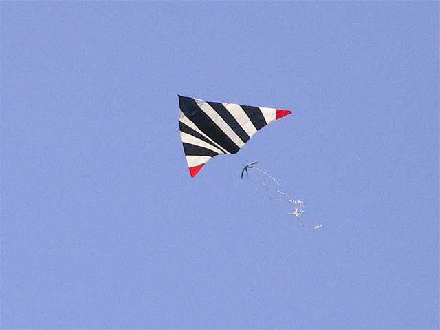
...ou ce delta à queue argentée et rotative !

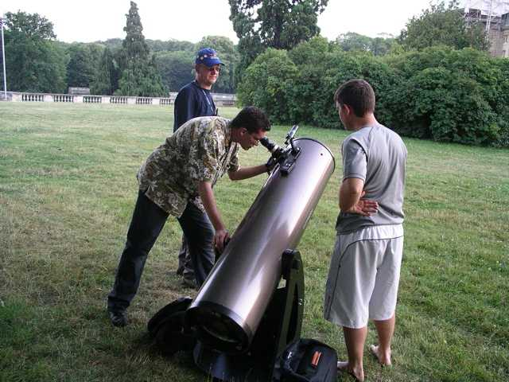
Les fans du télescope ont amené sur la pelouse ce modèle de 30 cm, ce qui est gros pour des amateurs. On voit Jupiter, et la lune comme si on y était.

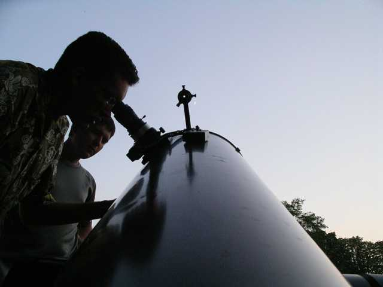
Pour les novices, un télescope a un miroir concave au fond du tube, et à l'embouchure un petit miroir qui renvoie l'image soit dans l'axe, à travers un trou du miroir primaire, soit à 45° vers un oculaire latéral comme ici.

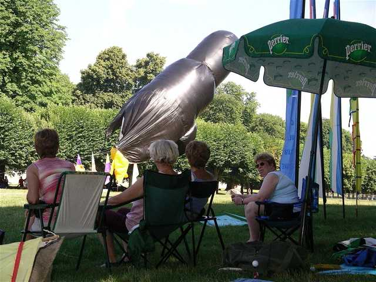
Dimanche matin, pas encore beaucoup de vent. Les fans du ballon solaire se sont levés à 6 h du matin pour en profiter ! Mais Joël peut encore faire voler son pingouin après le petit-déj' (offert, merci) !

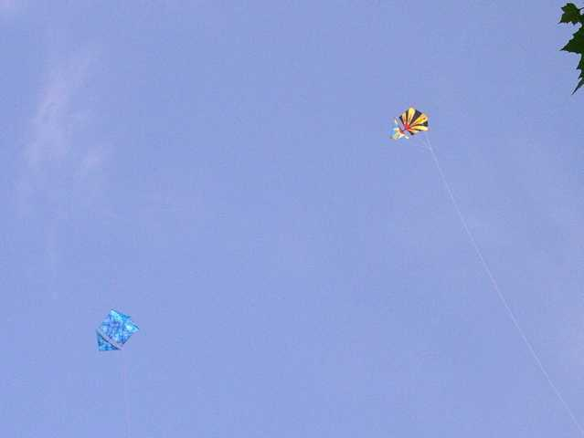
On fait voler des CVs light, comme des rollers ou des Dopéros...

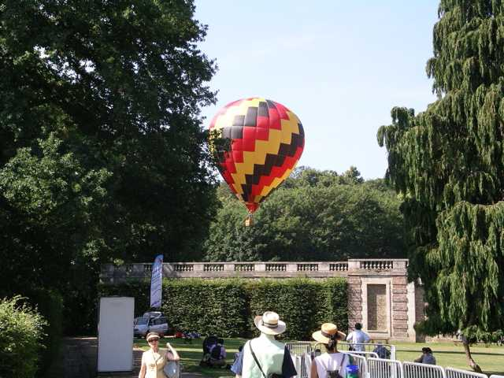
Michel Gressier fait voler sans problèmes sa mini-montgolfière. Mini, mini, mais quand même 8 m de diamètre !

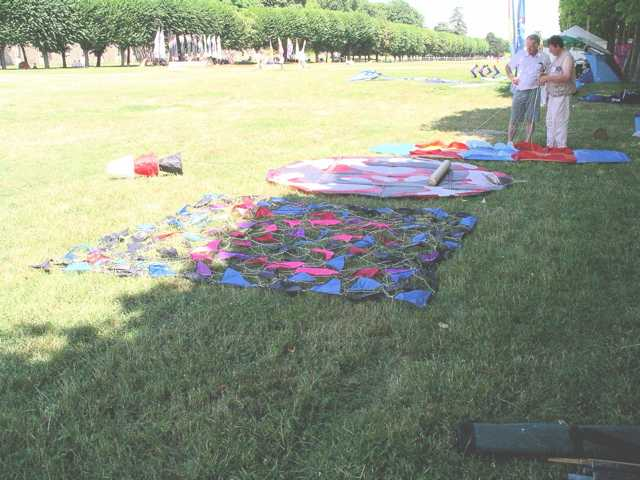
Les Simonnet ont sorti cette bâche, et ce cerf-volant rond qui volera un peu. François explique son Wasseges.

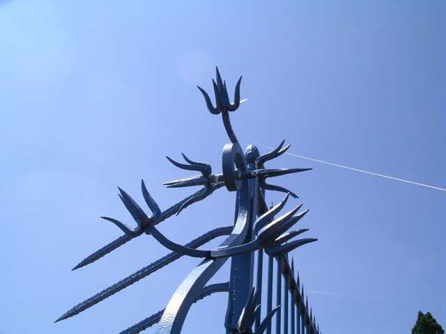
Il y a quand même eu des risées pendant un certain temps. Mon Albatros2 vole au-dessus des grilles splendides du parc.

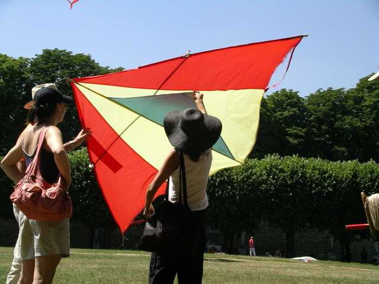
Christophe Jacquemoud, lui, drague en expliquant son delta vapeur qui a connu bien des expériences...

Un cervoliste a sorti une girouette qui fonctionne très bien, même avec ce vent faible !

Les enfants volent aussi, mais il faut courir, et avec cette chaleur, ça ne dure pas longtemps !

Le Dopéro reste la monture préférée du week-end !

On revoit le vautour noir et blanc, très stable, même s'il fait normalement des tours dans les thermiques.

C'est le jour des oiseaux. Jean-Claude a celui-ci, noir et blanc....

...et celui-là, dont j'aime l'alliance de bleus, plus belle que sur la photo...

Christophe continue à gonfler ses montgolfières dans l'Orangerie, maintenant, il dégaine des 2 mains à la fois !

Et on construit sans arrêt, ça devient l'usine à ballons-étoiles !

Suite des précédents reportages : j'ai trouvé encore des infos sur le Pomorseff (et une nouvelle orthographe...). Devinez où ?

...dans le bouquin de Lecornu de 1902 que quelqu'un a amené, mais que j'ai vu trop tard pour bien en profiter. Il y a de tout dans ce livre encyclopédique et facile à lire...

Hugo a monté sa roue, il va maintenant si vite qu'on n'arrive même plus à l'aider !

Celle de Michel était déjà montée dans l'Orangerie alors ils ont fait des vols tirés à la main pour animer la fin d'après-midi. Sans vent, ou avec des risées turbulentes, c'est galère de mettre ça en l'air ! Et au sol, pourquoi tu enfermes des petites filles dedans, tonton Michel !

Finalement, Michel a fait voler son flow-form, bien mais pas très longtemps...

Il y avait beaucoup de monde dans le parc ce dimanche, les pelouses étaient rafraîchissantes !

Mais c'est finalement Thérèse qui a construit le plus beau cerf-volant que j'aie vu à Meudon ! Il est d'une délicatesse incroyable, elle doit hésiter à le frotter aux flow-forms, cellulaires et autres bêtes brutes !
Hé bien pour une première, c'était drôlement bien réussi ! Pour voler, le site est... disons... difficile... surtout avec un vent faible. A revoir avec un vent plus fort ! Mais le parc est splendide et intéressant, l'organisation était nickel, faudrait juste : dire à Babeth de varier les menus et proposer plus qu'un (je dis bien UN) verre d'eau. Et aussi, éradiquer TOUTES les voitures de l'allée centrale : si le groupe électrogène et les voitures "de servitude " y stationnent, on ne pourra jamais empêcher les cervolistes, voire le public, de s'y mettre aussi, il faut éloigner tout le monde ! Mais dans l'ensemble, c'était super, CarnetDeVol, si vous pouvez le refaire, j'y retournera !